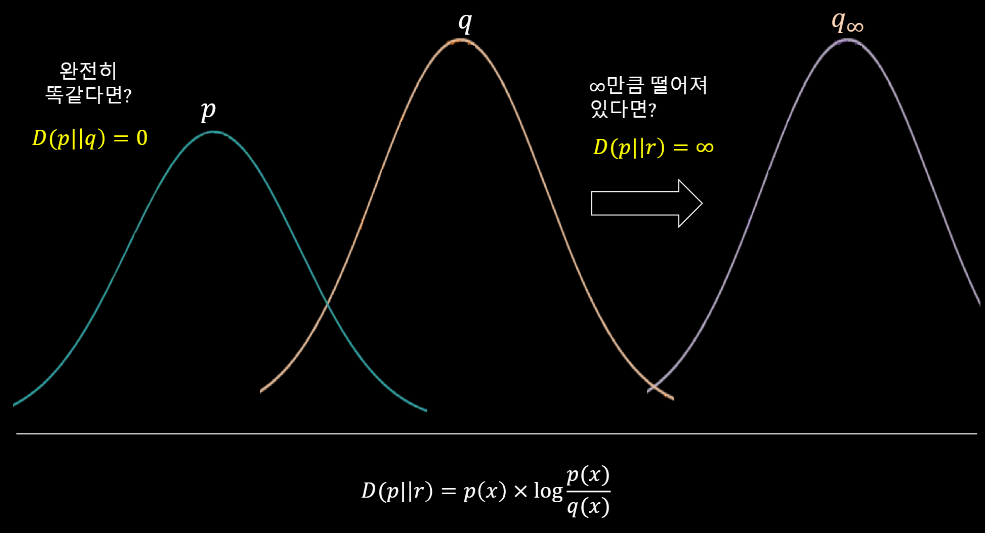

Entropy
Entropy 개념, 손실
Fundamental
2026-04-21
#Information Theory #Entropy
KL Divergence 개념
Entropy 개념, 손실
MLE 개념.
MAP 개념.
Bayesian Inference 개념.
기초전자기학 개념 및 이론 정리
상수 계수를 갖는 2계 제차 미분 방정식
Fundamental Theory 카테고리 테스트.
Generative AI 카테고리 테스트.
기초전자기학 개념 및 이론 정리
Surface EM Theory 카테고리 테스트를 위한 글입니다.
본 카테고리 테스트.
시합
Probability 카테고리 테스트.
기본 타격 동작
차원 축소는 원칙적으로 정보 손실. 단, 데이터가 저차원 다양체/저랭크면 예외적으로 손실이 작아질 수 있음.
KL Divergence는 두 확률 분포 간의 차이를 나타내는 척도 중 하나로, 정보 이론에서 중요한 개념으로 사용된다. 즉, 의 확률 분포와 확률 분포의 차이를 최소화 하도록 최적화(backpropagation)가 가능하다는 말이다.
,where & are probability distributions, is a random variable and , , (분자와 분모를 바꿔도 무방)
일반적으로 KL divergence를 구해보면 p를 기준으로 할 때 q까지의 거리와 q를 기준으로 할 때 p까지의 거리가 다를 수도 있다. Euclidean distance 관점에서는 틀린 말.
Log-sum inequality에 의해, 이므로, 임이 증명된다.

만약 위 그림의 p와 q 분포가 완전히 동일하다면 는 0이 되며, 완전히 떨어져 있는 경우엔 에 가까워진다.
와 는 softmax를 통과한 확률분포라고 가정하고, n개의 데이터를 모아 Monte Carlo 근사 (n개의 데이터를 샘플링한 평균은 전체의 평균이다.)를 취하면 로 표현할 수 있다. 이것을 loss로 사용하게 되면 예측 오차를 줄이면서 전체적인 확률 분포도 같아지도록 학습이 가능하다.